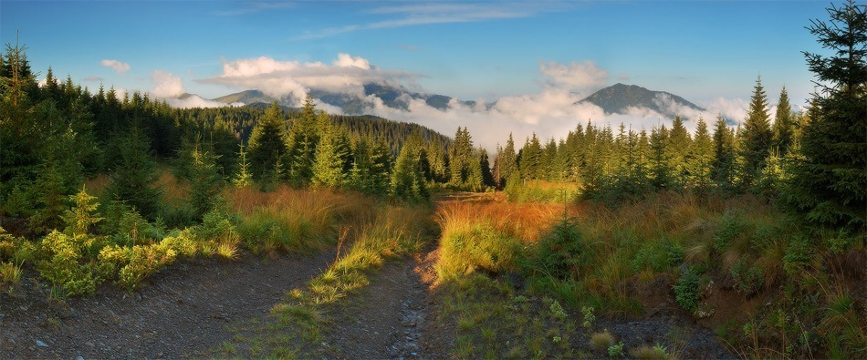
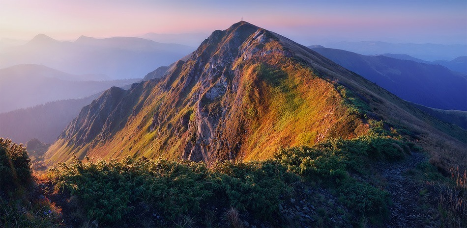
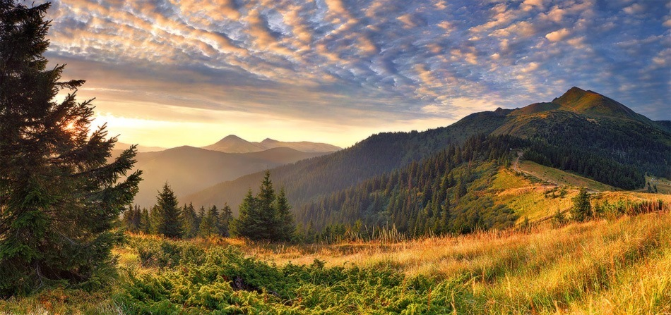
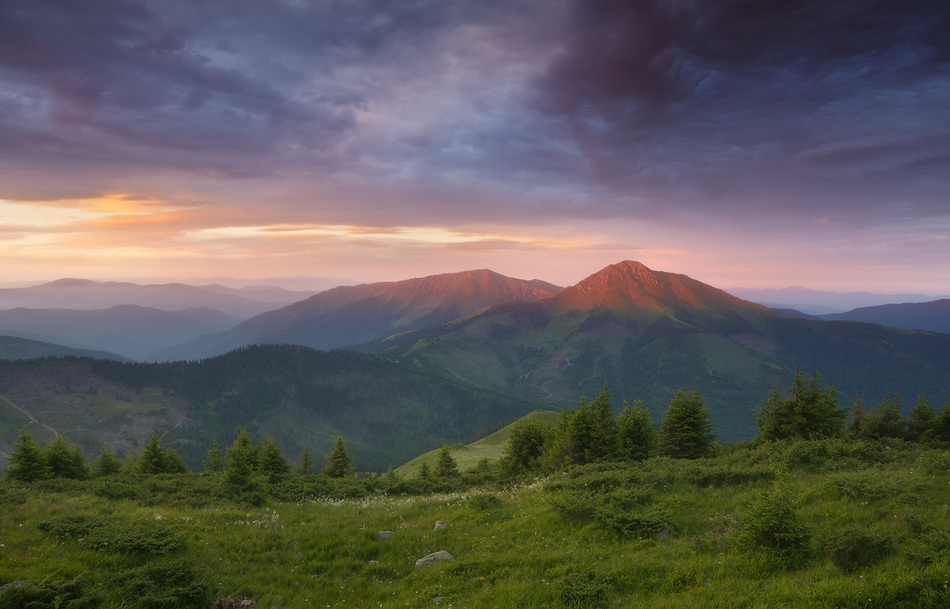
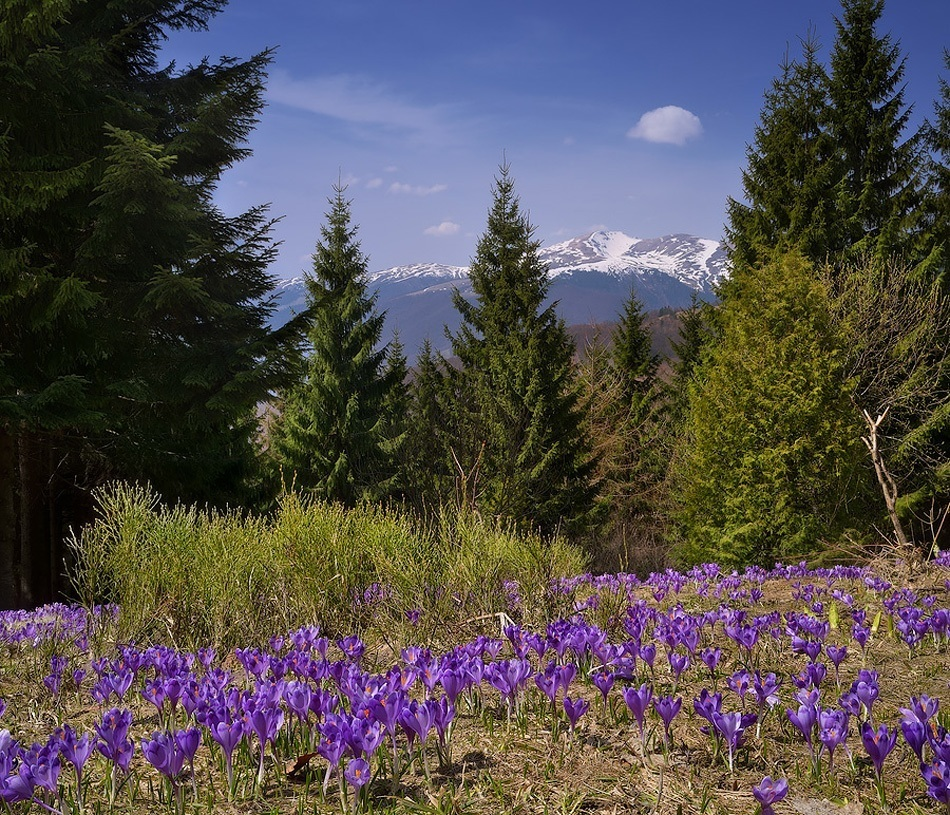
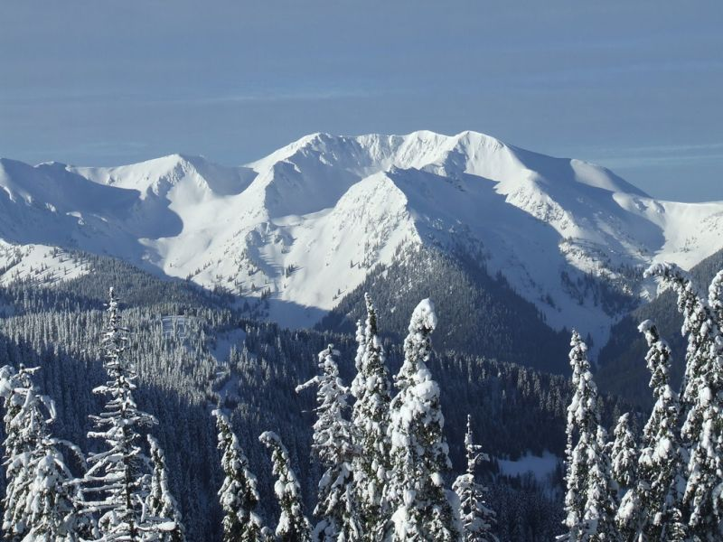

Мармароські гори називають “Гуцульськими Альпами”, але насправді Гуцульські Альпи — це тільки частина масиву. Ще одна їх складова, Чивчини, знаходиться на північному сході Мармарос. Коли краще планувати похід і куди йти? Мармароси — найдавніші гори Карпат. Їх вирізняють гостроверхі пікоподібні вершини, стрімкі й скелясті схили, дуже глибокі річкові долини. Мармароси лежать на території Румунії, а зі сторони України розташовані їх північні та північно-західні частини — Чивчинські та Рахівські гори. Це найбільш цікаві за рельєфом гори. Побачите фото з гострими шпилястими схилами, різкими перепадами висот і всі заквітчані рододендроном — це з 99% вірогідності будуть саме Мармароси.
Найбільш популярний маршрут пролягає через гору Піп-Іван Мармароський (1936 м) і починається у с. Діловому на прикордонному пункті контролю. Аби вийти цим маршрутом, потрібно отримати дозвіл, бо за хребтом, на якому знаходиться вершина тутешнього Попа Івана, вже Румунія. У процедурі нічого складного немає: пишете заяву за кілька тижнів до походу, надсилаєте керівнику прикордонного загону, чекаєте на підтвердження. Далі треба буде тільки паспорт не забути, бо без нього ваш похід завершиться вже перед шлагбаумом у Діловому.
Піп-Іван Мармароський (1936 м) — настільки “видатна” у багатьох значеннях цього слова вершина, що її разом з прилеглими горами та розташованими поруч високогірними полонинами об’єднують у власну формацію — Гори Піп-Іван.
Вершина пірамідальна і справляє неабияке враження: величезна, масивна, розлога, має круті схили, гострі хребти, скелясті виступи. Попід Піп-Іваном часто таборують туристи, а на вершину ходять радіально — без рюкзаків. Після сніжних зим довкола Попа-Івана утворюються озерця: на мапах такі не знайдеш, бо до літа вони випаровуються.
Піп-Іван. Гір з такою назвою у Карпатах дві, і не дарма кожна з вершин має уточнення — “Чорногірський” та “Мармароський”. Складнощі з назвами виникли давно: за однією з версій, безталанні топографи переплутали карпатські масиви і продублювали на Мармаросах вершини Чорногірського хребта. Тепер на мапах є Піп-Іван Мармароський та Піп-Іван Чорногірський, є навіть два Петроси: перший — гора-двотисячник на Чорногорі, другий — значно нижчий, всього 1780 м, з продубльованою назвою на кордоні з Румунією. Намагайтесь не заплутатись, плануючи свій маршрут.
До речі, популярна мандрівка на 5 днів так і зветься “Від Попа до Попа” і складається з проходження Рахівських гір (Гуцульських Альп) та підкорення першої вершини Чорногірського хребта — двотисячника Піп-Іван. Напевно це найбільш різноманітний та цікавий маршрут Карпатами, який тільки можна обрати, якщо в запасі на гори маєте щонайменше тиждень.
Для більшості туристів, що разом з відгулами отримують майже 7 днів вихідних, Мармароси — хороша мета на перший тиждень травня. Проте варто бути завбачливими: тут не кримський клімат, тож не чекайте теплих ночей і сухих стежок попід ногами. У Мармаросах буде холодно, мокро і навіть сніжно. Спитайте тих, хто навіть у середині травня по коліно в кучугурах піднімався на Піп-Іван, а для спуску з гори взагалі брав із собою снігоступи.
Кінець весни — сезон цвітіння крокусів. Дивовижна краса: схил ще майже весь білий, там, де сонечко більше гріло, трава, прилизана снігом, що сповзав у долину і неквапом танув. А поміж того всього стирчать гострі бутони крокусів. Квіти, які навіть попід заметом знайти можна, у травні вкривають і Мармароси, і Свидовець, і Чорногору. Ростуть крокуси інколи настільки рясно, що трави попід ними не видно, а від фіолету рябить в очах. До речі, зустрічаються і білі крокуси. Знаходиш такий в оточенні фіолетових — і тішишся, наче скарбу.
Проте краще у Мармароси йти не за крокусами, а по рододендрон — у червні, коли шпилясті кам’яні гори вкривають червоні і малинові квіти. Карпатський рододендрон ще кличуть “червоною рутою”. Але навіть не думайте збирати букетик — це червонокнижна рослина. Дивитись можна, чіпати — ні.
